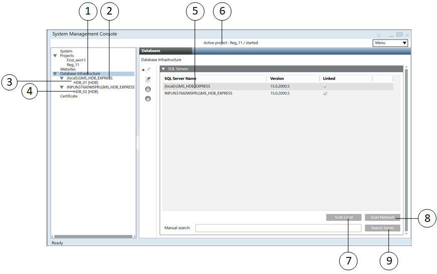
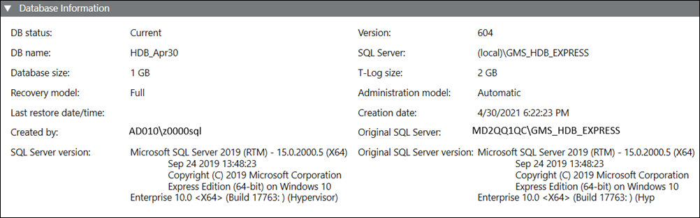
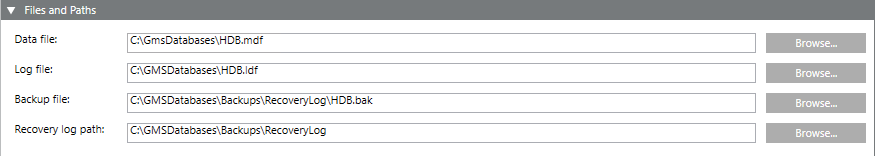
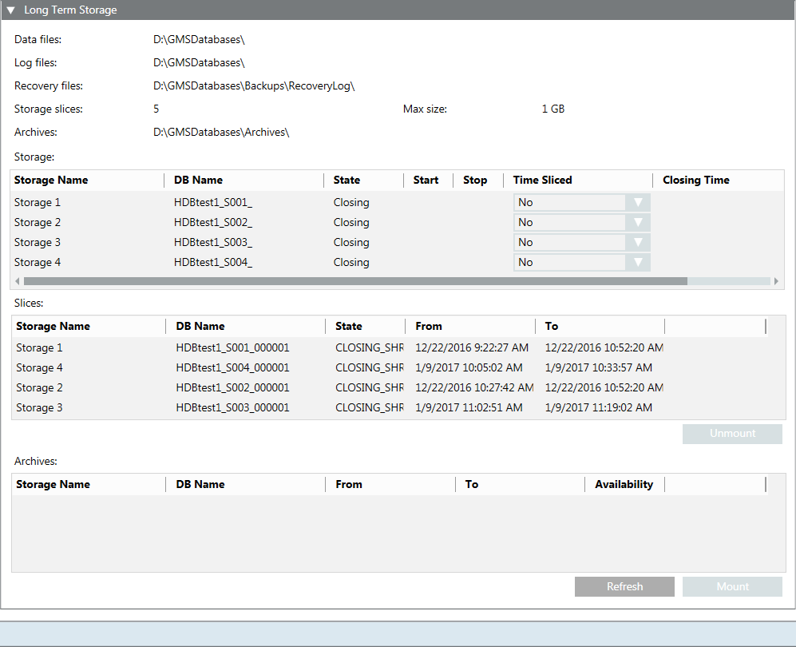
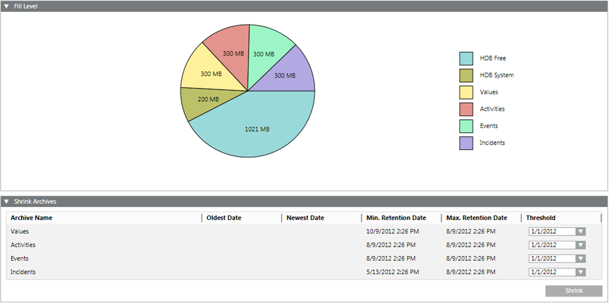
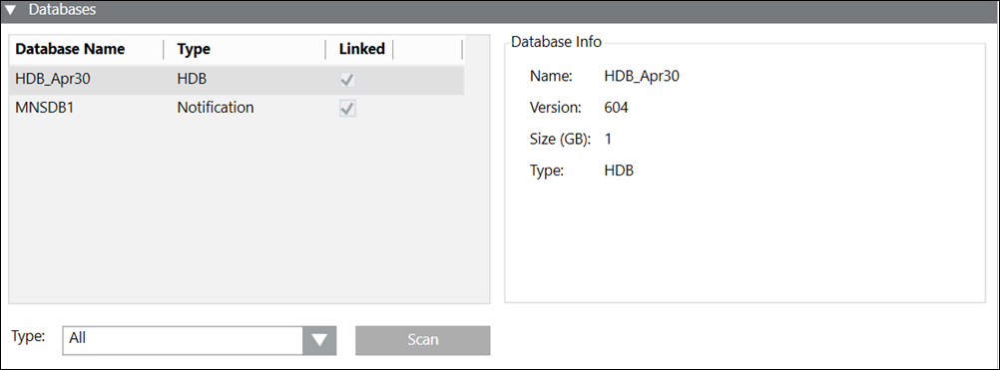
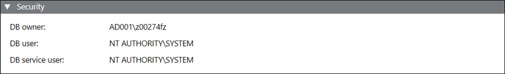
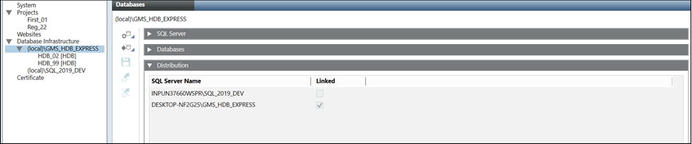
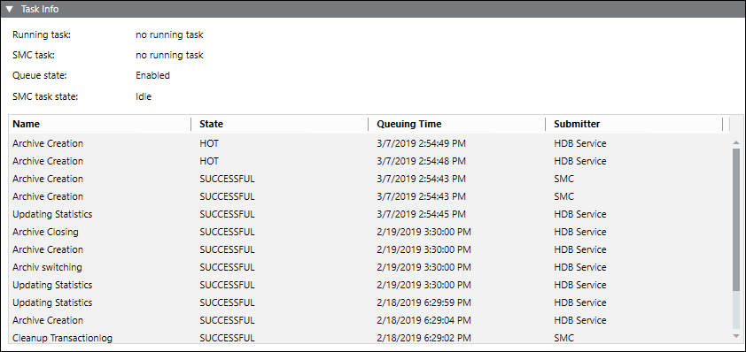

History Infrastructure Workspace
This section gives an overview of the History Infrastructure workspace. For information on the notification database workspace, see Notification Database Configuration.
When you select the main Database Infrastructure folder in the SMC, the Databases tab displays. You can perform the following tasks in this tab:
- Finding and selecting an SQL Server
- Creating and configuring a History Database
- Attaching and detaching a History Database
- Editing and cleaning up a History Database
- Backing up and reloading a History Database
- Updating a History Database

Item | Name and Description |
1 | Database Infrastructure main folder |
2 | Instance name of the local SQL Server |
3 | Available History Database on the local server |
4 | Instance name and computer name of the remote SQL Server |
5 | List comprising the local SQL Server as well as any available network SQL servers |
6 | Active project and the related project state |
7 | Scan Local: Scans for local SQL server instances |
8 | Scan Network: Scans for SQL server instances in the local network |
9 | Search Server: Scans for a specific SQL server instances in the entire network, for example, PC_name\Instance. Wildcard characters are not allowed. |
The toolbar icons and the following expanders help you to configure HDB.
Database Information
The Database Information expander displays information on both History Databases and the SQL Server.

Name | Description |
DB status | Displays the status of the History Database: |
DB name | Name of the History Database in the project. The following characters are not permitted: /, \, :, *, ?, “, <, >, |, #, @, [, ], {, }, $, !, &, %, +, -, &, (, ), ‘, ~, ;, ,, ., space. |
Database size | Determines the size of the History Database (1 to 250 GB). Default is 10 GB: |
Recovery model | Defines the recovery model used for the history database (simple or full) (see Recovery Models). You can change the backup model at any time. Long term storage databases are always in recovery model full. |
Last restore date/time | Displays the date and time of the last restore of the History Database. |
Created by | Displays who created the History Database. |
SQL Server version | Displays the currently installed SQL Server version operating with the History Database. |
Version | Displays the present version of the History Database. |
SQL Server | Displays the name of the NamedInstance of the SQL Server containing the History Database. |
T-Log size | Displays the size of the transaction log file. The transaction log file is always twice as large as the History Database. |
Administration model | Displays the current active status, Automatic or Manual. Automatic: The administration of the History Database is controlled by the system. Manual: The administration of the History Database is controlled by the IT department of the customer. For example, backups or size of the History Database. Therefore, the customer is responsible for the SQL Server administration using the SQL Agent tool. |
Creation date | Displays the creation date and time of the History Database. |
Original SQL Server | Displays the service and NamedInstance name applied to the History Database. |
Original SQL Server version | Displays the original version of the SQL Server used to create the History Database. |
Files and Paths
The Files and Paths expander allows for specifying individual folders and file names for data backup.

Name | Description |
Data file | Folder and file name of the History Database |
Log file | Folder and file name of the transaction log file |
Backup file | Folder and file name of the History Database backup |
Recovery log path | Folder for the History Database backup. The backup files created automatically are saved to this folder in the event of the backup variant full backup. |

NOTE 1:
Distribute data storage to various media such as hard disk and Server to avoid data losses in the event of a failure (see Recovery Models).
NOTE 2:
If you do not use the standard paths in the Data file, Log file, Backup file, and Recovery log path fields and if the SQL Server is on a different computer, you must first create the folders before you click Save.
NOTE 3:
The following characters are not permitted in file names: *, ?, “, <, >, |.
Long Term Storage
The Long Term Storage expander lets you create long term storage slices for backing up your data. For recommendations on best SQL Server performance, see Recommendation for Best SQL Server Performance in Terminologies of History Infrastructure.

Name | Description |
Data files | The destination where the data files (.mdf) are saved. |
Log files | The destination where the log files (.ldf) are saved. |
Recovery files | The destination where the recovery files are saved. |
Storage slices | The number of storage slices the long term storage has (max. 10). When this number is reached, the oldest storage slice is archived. NOTE: This number only includes slices in final state. Spare, current or archived slices are not included in the number. |
Max. size | Determines the maximum size of a storage slice:
When this number is reached, another storage slice is created. As long term storage databases are always in recovery model Full each database slice would require twice as much as space of the max size specified, one portion for the Data file and the other for the T-Log file. NOTE: This entry may override the entry in the Time Sliced field. |
Archives | The destination where the archived storage files are saved. |
Storage | Shows the storages. |
Storage Name | The name of the storage. |
DB Name | The name of the database. |
State | The state of the storage. |
Start | Activates the storage. The storage will be activated when you click Save. |
Stop | Deactivates the storage. The storage will be deactivated when you click Save. |
Time Sliced | The point in time when a new storage slice is created. For example, if you select Monthly, a new storage slice is created each month. NOTE: This entry may override the entry in the Max. size field. |
Closing Time | The exact time when a new storage slice is created. |
Slices | Shows the storage slices. |
Storage Name | The name of the storage slice. |
DB Name | The name of the database. |
State | The state of the storage slice. |
From | The date and time from which the storage slice was active. |
To | The date and time until the storage slice was active. |
Unmount | Unmounts a mounted storage. |
Archives | Shows the archived storage slices. |
Storage Name | The name of the archived storage slice. |
DB Name | The name of the database. |
From | The date and time from which the storage slice was archived. |
To | The date and time until the storage slice was archived. |
Availability | The availability of the storage. |
Refresh | Refreshes the table. |
Mount | Mounts the archived storage slice. |
Fill Level
The Fill Level expander displays the contents used from the individual data groups as well as free memory.

Name | Description |
Archive Name | Displays the name of individual data groups:
|
Oldest Date | Displays the oldest saved value for this data group. |
Newest Date | Displays the last saved value for this data group. |
Min. Retention Date | Determines the minimum amount of data that cannot be deleted. |
Max. Retention Date | Determines the maximum amount of data that can be saved in the HDB. |
Threshold | Deletes data up to the set date. |
Shrink | Deletes data entries up to the defined date. |
Toolbar
For additional information, see Additional HDB Toolbar Control Procedures, in History Infrastructure Procedures.
History Infrastructure Toolbar | ||
Item | Name | Description |
| Provides the following options: | |
| Drop | Delete an existing HDB. |
| Edit | Edit an existing HDB. |
| Link | Connect an existing HDB to: |
Unlink | Unlink an HDB for server and History Database. | |
| Save | Save the data when: |
| Back up an HDB to an HDB backup file. | |
| Provides the following options: Restore History Database: Restores a Desigo CC HDB backup file | |
| Purge | Clear the contents of an existing HDB. This function typically is used once following project commissioning. |
| Upgrade the HDB to a new version. | |
| Start Automatic Maintenance | Start the Automatic Maintenance. Automated database tasks are processed (for example backup). |
| Stop Automatic Maintenance | Stop the Automatic Maintenance. Automated database tasks are no longer processed (for example backup). Incoming history data is still stored in the HDB if the project is running. The Automatic Maintenance should not be stopped while the project is running as it may lead to data loss. |
| Statistics | Display the memory used by the individual data group. |
Encrypt History Database Backup | Create a compressed history database backup or LTS archive backup file (7-Zip file), encrypted with a password at a specified folder. | |
Decrypt History Database Backup | Decompress and decrypt a compressed encrypted history database backup or LTS archive backup file (which is compressed in 7z Archive (.7z) file type and 7z.001 (7z.001) file type for split backup files) at a specified location. | |


Databases
The Databases expander displays information on the available History Databases on this SQL Server.

Name | Description |
Database Name | Displays all databases on the selected SQL Server instance. |
Type | Displays the type of the database. For databases belonging to any extension, the name of the extension displays as its type, for example, Notification displays as the type for databases associated with the Notification extension. For other databases, the type displays as HDB. |
Linked | Displays the link state of the History Database. |
Database Info | Displays the detailed information for the selected History Database, including:
|
Type | Allows you select the database type to be detected on this SQL Server instance. It provides the following database types: |
Scan | Detects the History Databases on this SQL Server instance according to the selected type in the Type drop down list. |
Security
The HDB owner can be changed by stopping and editing the database.
The HDB user and the HDB service user are read-only and cannot be changed. For editing users, see SMC System Settings.

Name | Account | Description |
DB Owner | <user defined> | Desigo CC SMC user who requires HDB owner rights. You can change it as required by stopping and editing database. The HDB owner must be different than the HDB user and the HDB service user. |
DB user | System | Desigo CC project user who requires HDB user rights for read and write operations. You can change it as required in System Account Settings, See Settings Expander in SMC System Settings. |
DB service user | HDB service | Desigo CC service user who requires HDB service user rights for maintenance operations. You can change it as required in HDB Service Account Settings, See Settings Expander in SMC System Settings. |
Required Rights for History Database | ||||
| SQL System Administrator | DB Owner | DB User | DB Service User |
Account | ||||
|
| <user defined> | System | HDB service |
Description | ||||
|
| Desigo CC project administrator who requires HDB administrator rights | Desigo CC project user who requires HDB user rights for read and write operations | Desigo CC service user who requires HDB service user rights for maintenance operations |
Required Rights | ||||
Create, restore, or upgrade History Database | X |
|
|
|
Edit HDB owner or HDB user or HDB service user | X |
|
|
|
Drop History Database | X |
|
|
|
Resolve unmounted archive | X |
|
|
|
Receive the History Database information | X | X |
|
|
Edit History Database size, recovery model, administration model, backup file, recovery log path and Long Term Storage configuration | X | X |
|
|
Start or stop automatic maintenance, statistics | X | X |
|
|
Run history backup | X | X | X |
|
Delete or purge the History Database | X | X |
|
|
Read and write to History Database |
|
| X |
|
Automatic maintenance |
|
|
| X |
NOTICE

HDB user and HDB service user
No history data can be saved to the HDB nor the automatic maintenance will function if the users are seen in red.
Distribution
Displays the merged data of distributed systems in the Log Viewer and Reports applications.
If you want a project to access data (for example, for reports) from multiple HDBs on different SQL Servers, you must link the SQL Servers. For more information, see Additional Procedures for Configuring Projects in Distribution > Link HDBs on different SQL Servers in Additional SMC Procedures > Setting up the Distributed System.

SQL Servers
The SQL Servers expander displays the information of local and remote SQL Servers.

Name | Description |
SQL Server Name | Displays a list of all SQL Servers found. |
Version | Displays the SQL Server version. |
Linked | Displays the link state. |
Scan Network | Detects all SQL Servers on the network. NOTE: This may take a few minutes depending on the size of the network. |
Manual Search | Text field to type server and instance names such as CH1W22332\GMS_HDB_EXPRESS. |
Scan Local | Detects all SQL Servers on the local computer. |
Search Server | Validates entry in the Manual Search text field for availability of the SQL Server. |
Task Info
The Task Info expander displays pending tasks or tasks to be executed by the Siemens GMS HDB Service. It also displays information on the tasks that have been previously executed by the Siemens GMS HDB Service along with the execution status. This information is online and is not stored.
The Task Info displays the latest 20 tasks and is updated continuously. Planned, Interrupted, Running, and Hot tasks are kept for troubleshooting.
This information is not available in Desigo CC client applications.

Name | Description |
Running task | Displays the currently operating, automated tasks as well as tasks initiated from the System Management Console, for example Backup. The date of the last action is displayed to the right. |
SMC task | Displays the tasks started on the System Management Console, for example, Backup. The date of the last action is displayed to the right. |
Queue State | Displays the state of the queue ( |
SMC task state | Displays the state of tasks to be run:
|